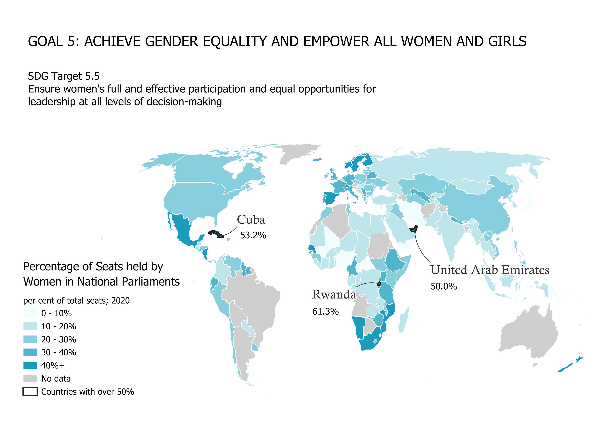
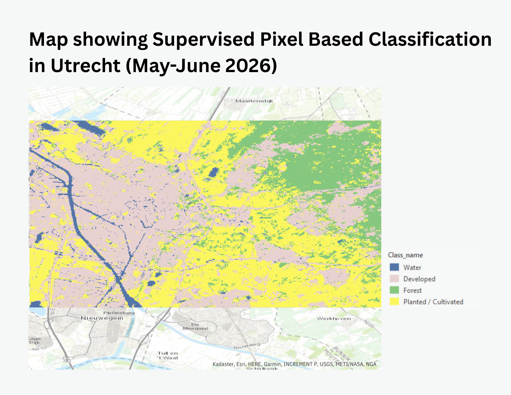
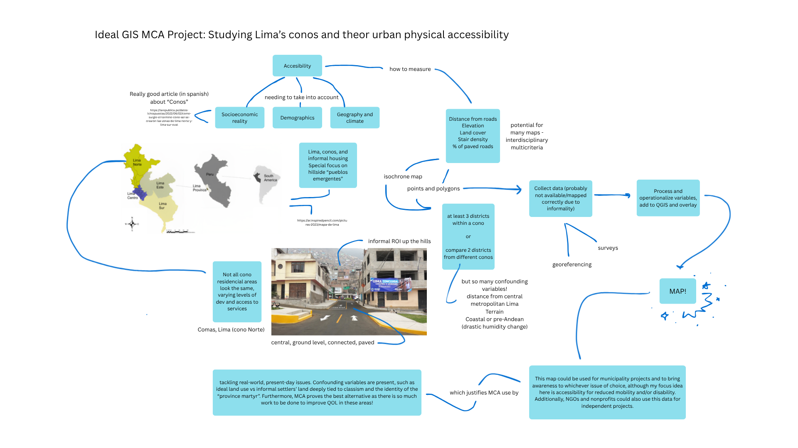

Interactive choropleth map
Focusing on SDG 5, Gender Equality, this map lets you visualize the percentage of seats held by women in parliament [SDG 5.5.1]


Focusing on SDG 5, Gender Equality, this map lets you visualize the percentage of seats held by women in parliament [SDG 5.5.1]

Detailed map showing walking time to nurseries and kindergartens in a residencial neighborhood of Lima, Peru.

This assignment was about aligning an old map with a new one. A comparison of riverside Western Rotterdam in the late 18th century and modern GIS technologies.

Showing vegetation health and deforestation over time in the Peruvian rainforest, between Tarapoto and Pucallpa.

Using ArcGIS, machine learning classifications in an area of Utrecht were conducted.

This conceptual assignment includes an ideal GIS project!